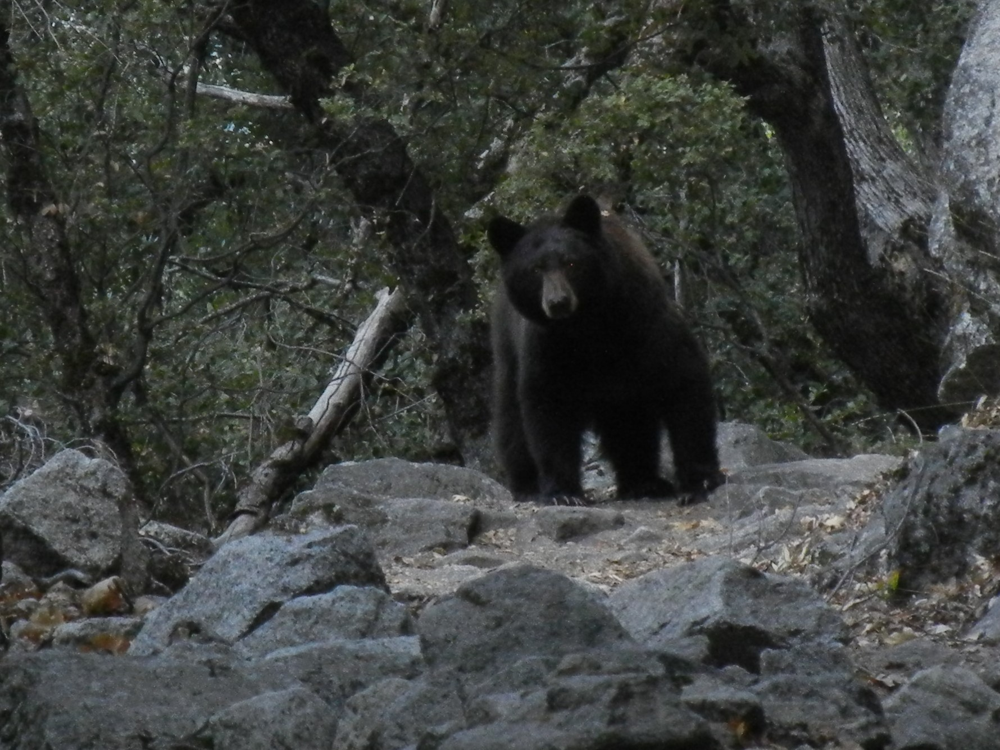

Paul was born in Berkeley, CA but he grew up on the Jersey Shore where he attended Monmouth Regional High School and worked summers at Sandy Hook beach. He maintains that the donuts at Delicious Orchards in Colts Neck, NJ are the world's best.
Paul has climbed several 14,000' peaks, including Mt. Rainier, Mt. Shasta, and Mt. Whitney. He enjoys backpacking, downhill and cross-country skiing, and road and mountain biking. Paul has broken 5 bones, causing friends and family to debate whether he is too adventurous, unlucky, or clumsy.
Paul has refereed over 700 AYSO or club soccer games, for youths from 8-19 years old.

As seen on Yosemite's Snow Creek Trail, October 2020